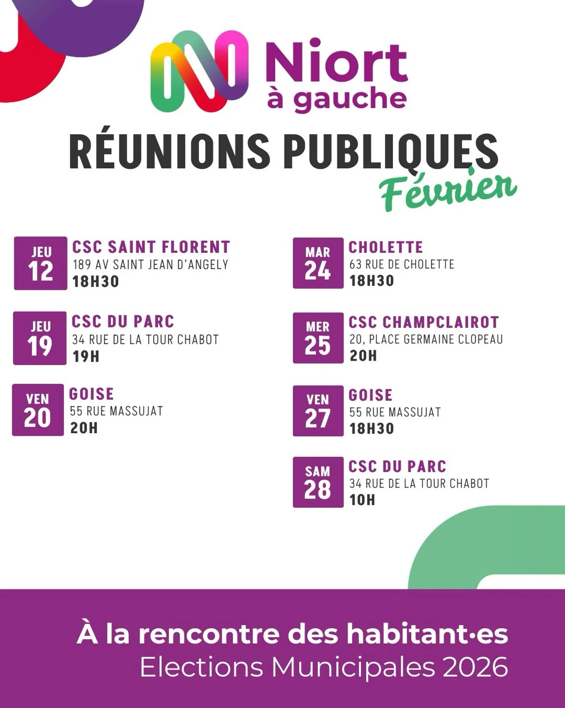

Annonce de Niort à gauche
Niort à gauche. Sept réunions publiques en février 2026
Date de mise à jour indiquée par Facebook · 29 janvier 2026
Repères éditoriaux
La liste Niort à gauche avait annoncé sept réunions publiques en février pour discuter de son programme avec les habitants. L’affiche indiquait Saint-Florent le 12 à 18 h 30, le CSC du Parc le 19 à 19 h, Goise le 20 à 20 h, Cholette le 24 à 18 h 30, le CSC Champclairot le 25 à 20 h, Goise le 27 à 18 h 30 et le CSC du Parc le 28 à 10 h.
Texte de la publication · Niort à gauche
Niort à Gauche toujours à la rencontre des habitants en février. Rejoignez nous pour échanger sur le programme et les actions pour notre ville.

Sources
Niort à gauche · publication relayée par le PCF 79 · bibliothèque Facebook · AR-0002-FB-00887
À lire aussi · À Niort, sept réunions publiques dans les quartiers en février